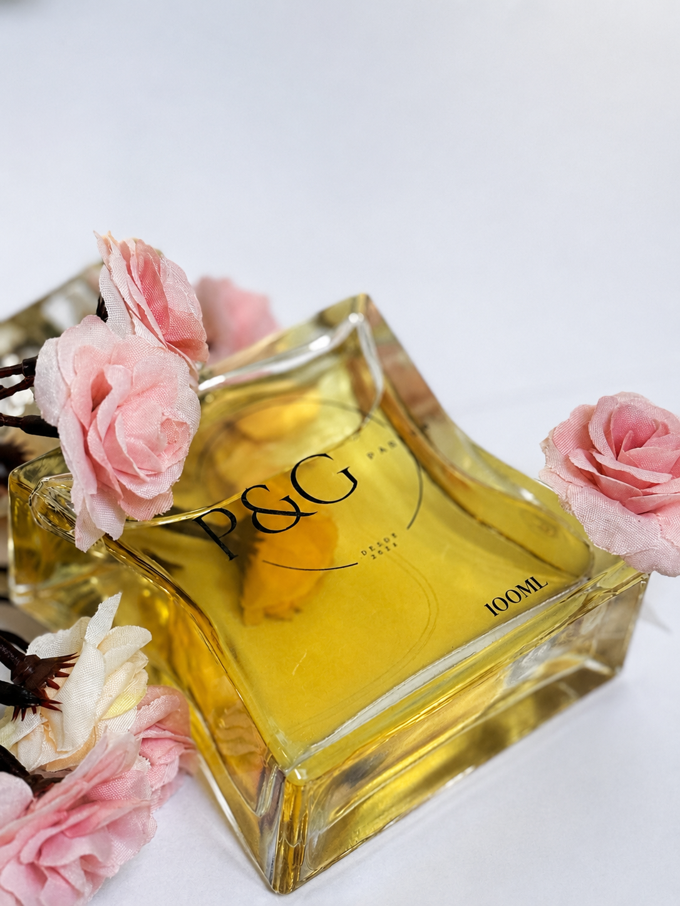
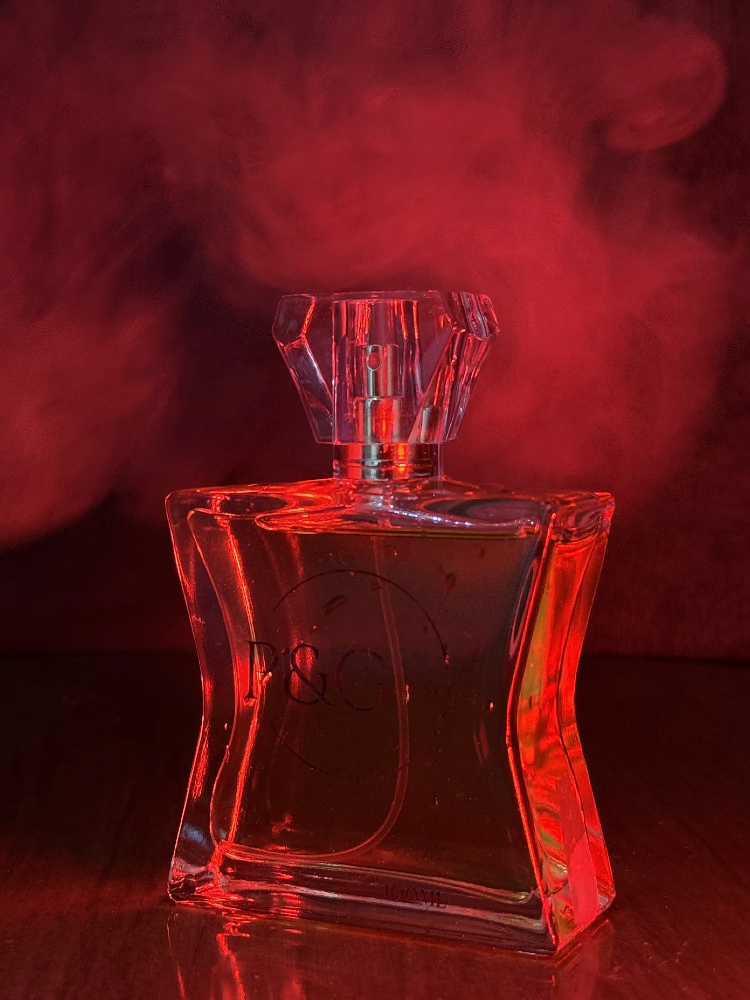
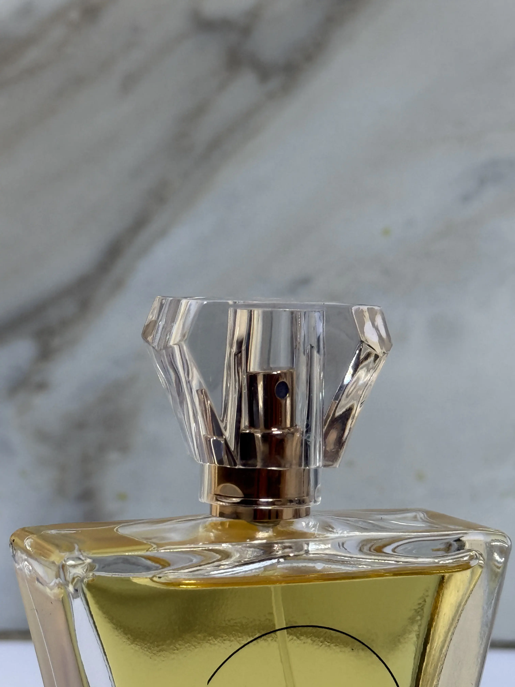
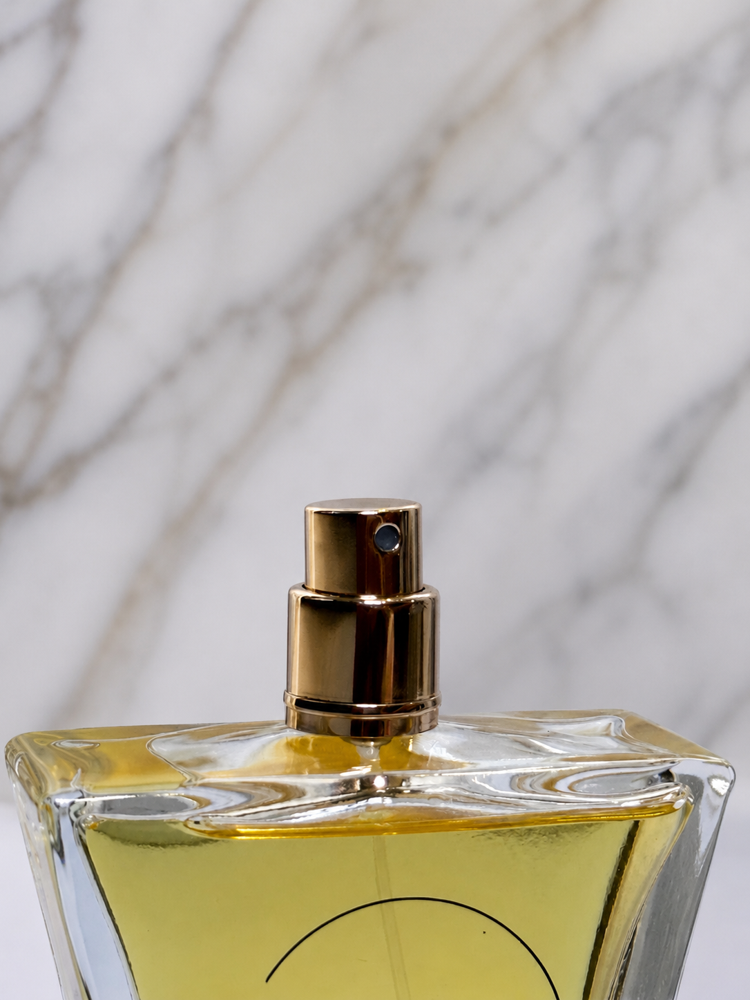
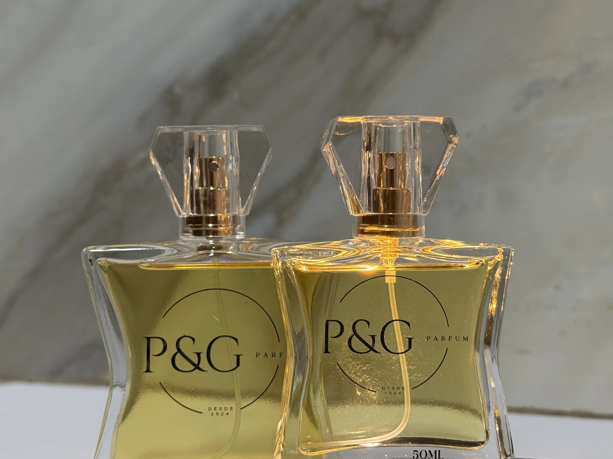
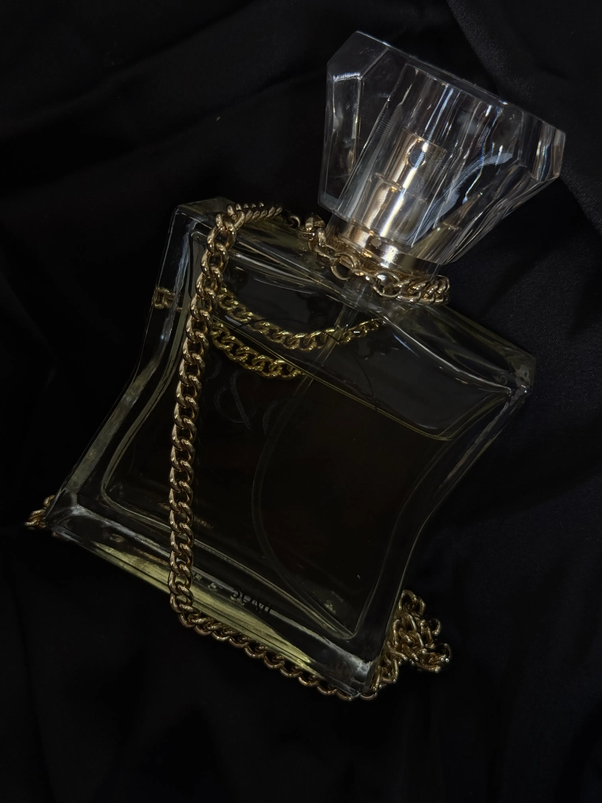
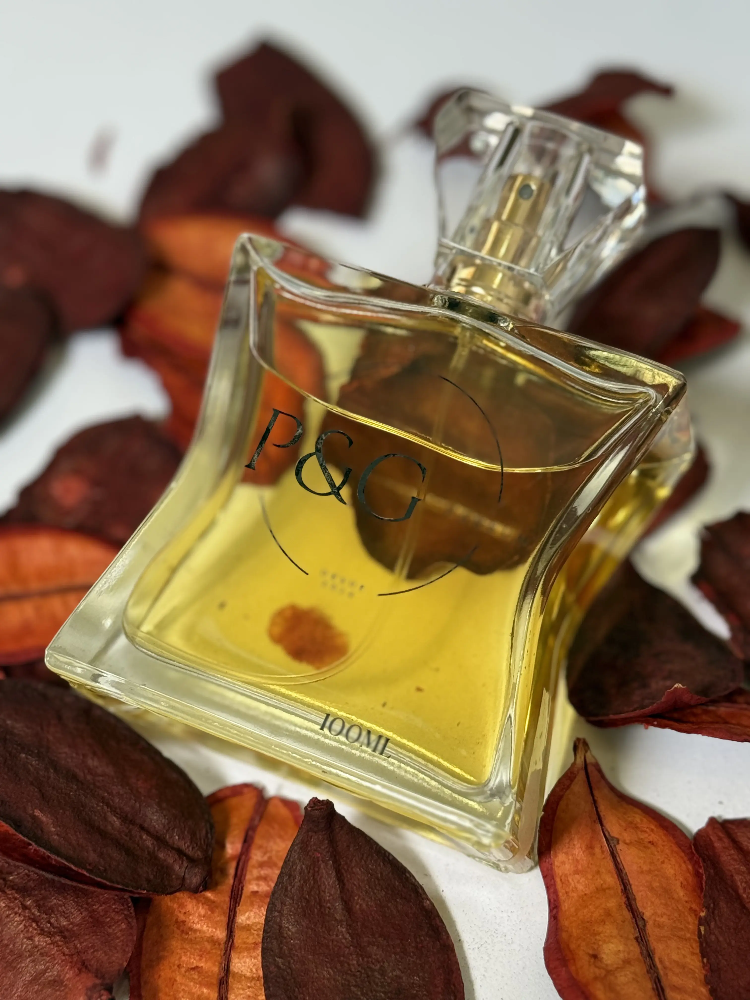

FRAGRÂNCIAS
Explore nossas fragrâncias mais vendidas

BQ 212 Sexy Woman
A essência BQ 212 Sexy Woman é envolvente e sensual, combinando notas florais e orientais. Traduz magnetismo, feminilidade cosmopolita e sedução discreta, criando um aroma misterioso e marcante.

BQ 212 VIP Rosé
Celebra a feminilidade elegante com notas florais e frutadas. Inspirada em festas exclusivas, transmite glamour, luxo e sofisticação.

BQ 212 VIP Red Rosé
Fragrância vibrante que mistura frutas vermelhas e notas florais. Representa luxo festivo, paixão e exclusividade.

BQ 212 VIP Woman
Elegante e sofisticada, combina notas florais e amadeiradas. Traduz autoconfiança e magnetismo urbano.

BQ 212 Woman
Fragrância urbana e moderna inspirada em Nova York. Energizante, elegante e cheia de personalidade.

Alien Thierry Mugler
Fragrância intensa e misteriosa com notas florais e amadeiradas. Transmite poder, magnetismo e sensualidade.

Andromeda
Luxuosa e sofisticada, combina notas florais e frutadas. Transmite elegância e sensualidade.

Angel Mugler
Ícone da perfumaria, mistura notas doces e orientais. Forte, sensual e inesquecível.
Angel Fantasm
Versão intensa do Angel, mais misteriosa e viciante. Mistura frutas, baunilha e âmbar.
Angel Nova
Fragrância moderna e vibrante com frutas e flores. Representa força, brilho e feminilidade.
Aura Mugler
Fragrância selvagem e instintiva com notas verdes e doces. Transmite energia natural e magnetismo.